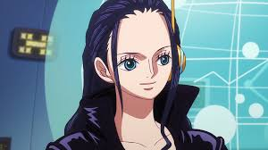
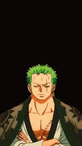

Voice Actors

Monkey D. Luffy
Voice: Mayumi Tanaka
Role: Captain
Voice: Mayumi Tanaka
Role: Captain

Nico Robin
Voice: Yuriko Yamaguchi
Role: Archaeologist
Voice: Yuriko Yamaguchi
Role: Archaeologist

Roronoa Zoro
Voice: Kazuya Nakai
Role: Swordsman / First Mate
Voice: Kazuya Nakai
Role: Swordsman / First Mate
Brook
Voice: Chō
Role: Musician
Voice: Chō
Role: Musician

Sanij
Voice: Hiroaki Hirata
Role: Cook / Fighter
Voice: Hiroaki Hirata
Role: Cook / Fighter